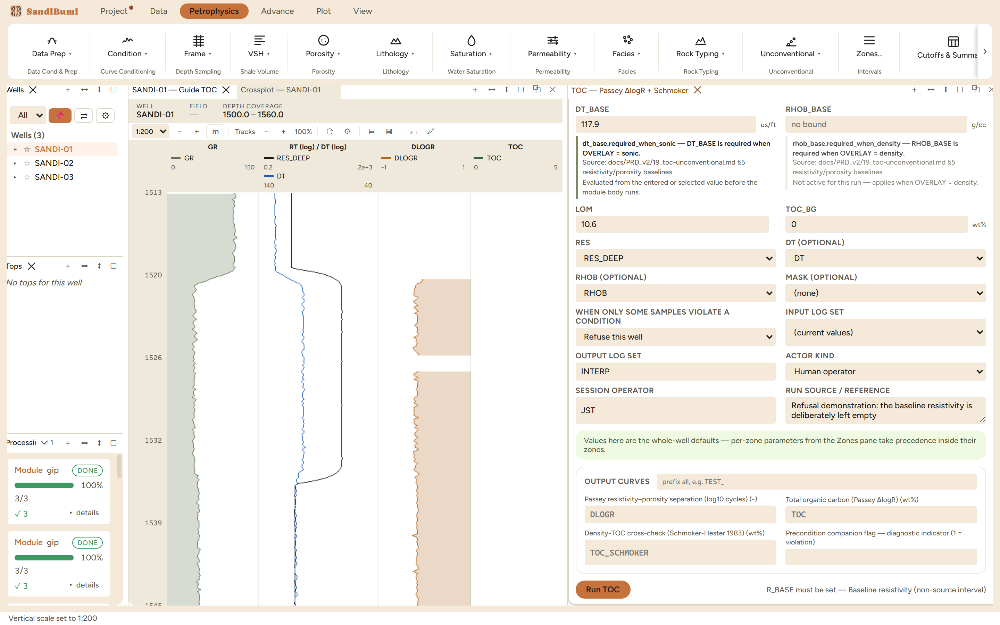
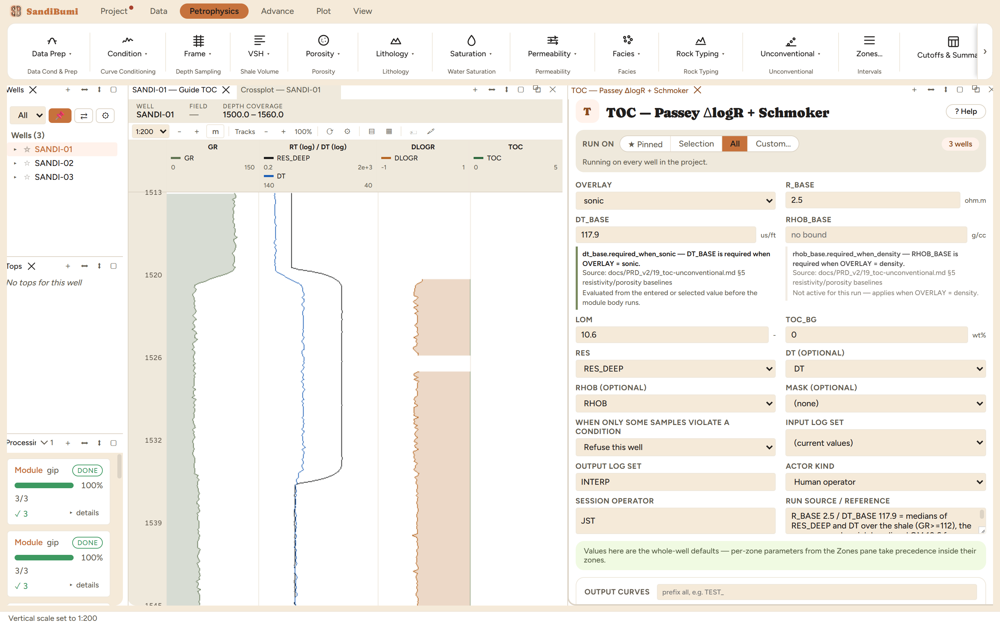
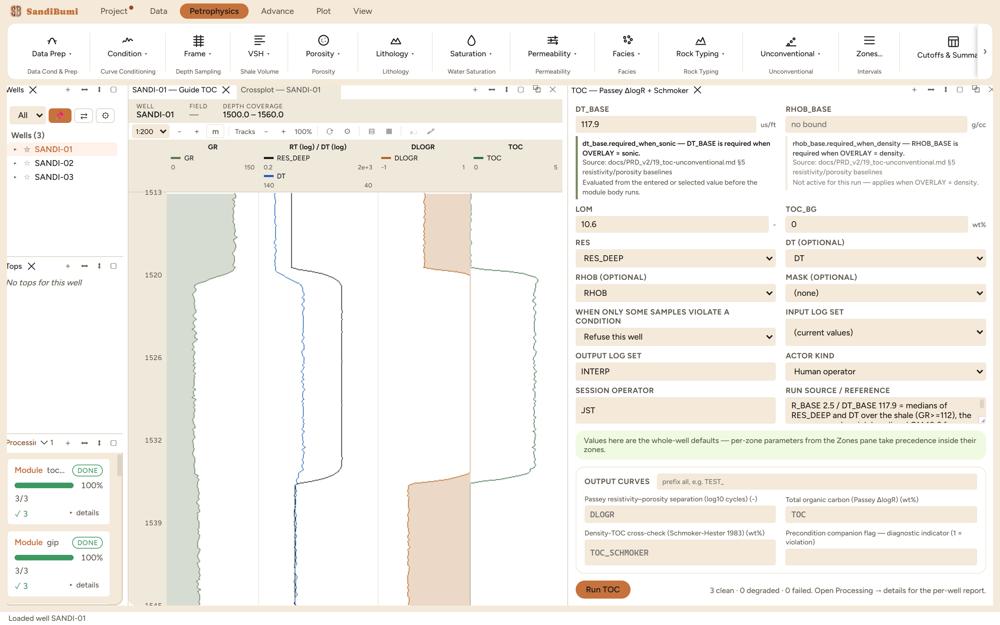

Total organic carbon from the Passey ΔlogR overlay: the separation between deep resistivity and a baselined porosity curve, converted to weight-percent TOC through a maturity term, with the Schmoker-Hester density transform written alongside as an independent cross-check. Reach for it when a source-rock or shale-gas study needs a continuous TOC curve and core geochemistry exists only at points, or not at all yet.
ΔlogR = log10(R / R_base) + 0.02·(DT − DT_base) [sonic overlay] ΔlogR = log10(R / R_base) − 2.5·(RHOB − RHOB_base) [density overlay] TOC = ΔlogR · 10^(2.297 − 0.1688·LOM) + TOC_BG (Passey et al. 1990) TOC_SCHMOKER = 154.497/RHOB − 57.261 (Schmoker-Hester 1983)
The baselines are picked on a non-source, clay-rich interval where the two curves overlie. Organic matter moves both curves the same direction, more resistive and more porous-looking, so their separation grows with organic content, and the LOM term converts separation to TOC because a mature source rock produces more separation per unit TOC than an immature one. Where ΔlogR < 0 the rock is non-source and TOC floors to the background value.
The baseline is the calibration, so the module refuses to invent one. With every other pick in place and the baseline resistivity left empty, the run stops:
R_BASE must be set — Baseline resistivity (non-source interval)


3 clean. The baseline verifies itself: over the shale, DLOGR medians 0.002 with nine-tenths of samples inside ±0.024, as close to zero as the curves' own noise allows. Across all 1185 samples DLOGR spans −0.39 to +1.14 with 321 samples above 0.1, and in the hot zone (ΔlogR > 0.5) TOC reads a median of 3.47 wt%, maximum 3.66.
Now the honest part: 295 of those 312 hot-zone samples are this section's gas sand, clean and resistive. A hydrocarbon-charged reservoir moves both overlay curves exactly the way organic-rich shale does, and Passey cannot tell the two apart; the analyst does, with GR and context. On this section the positive ΔlogR is pay, not source rock, and a TOC curve computed here would be quoted only after cutting the reservoir out.
The Schmoker cross-check makes the same point louder. It reads 4.6 to 12.9 wt% across the entire section, shale and sand alike, because the density transform was calibrated where low density means organics; here low density means porosity. A cross-check is only a check inside the rock it was calibrated for.
The variant isolates the maturity term: LOM 8 on identical baselines lifts the hot-zone median from 3.47 to 9.55 wt%, a factor of 2.75, exactly 10^(0.1688·2.6). An immature reading of the same separation nearly triples the TOC, which is why LOM must trace to measured maturity and never to a guess. Restoring LOM 10.6 reproduces the 3.47 median to the third decimal.
